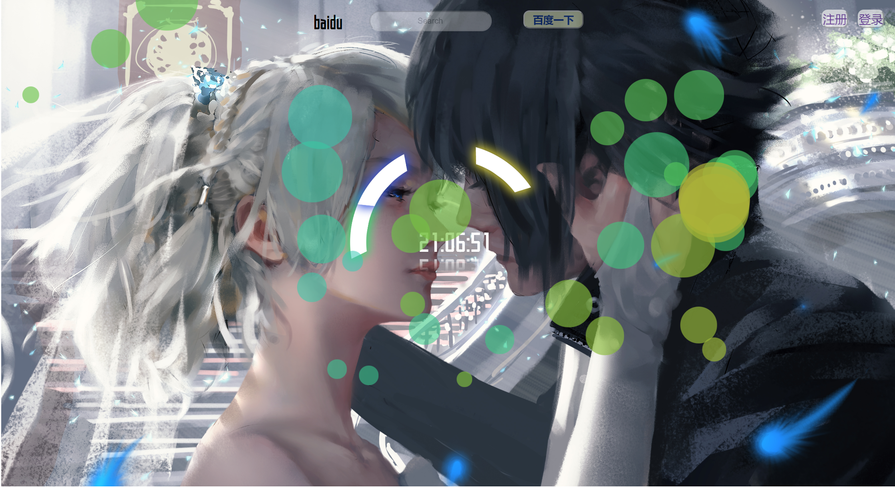
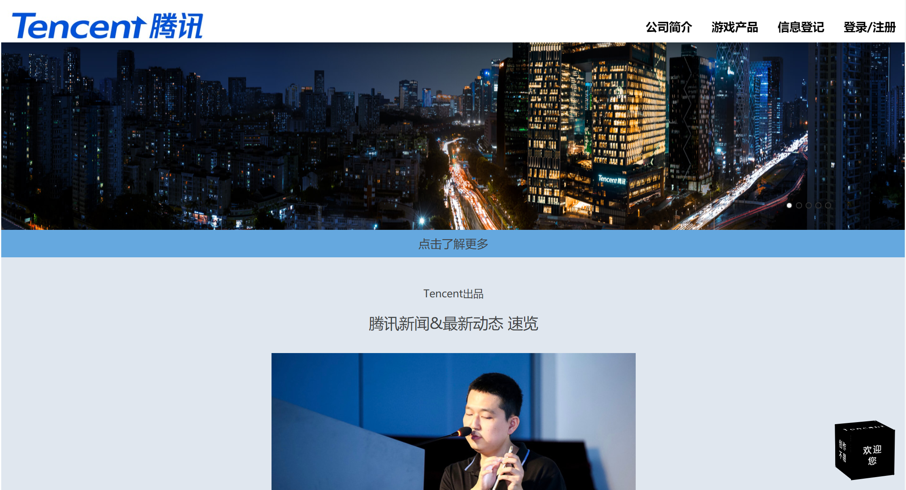
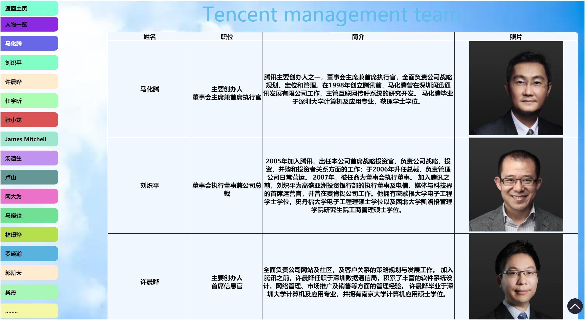
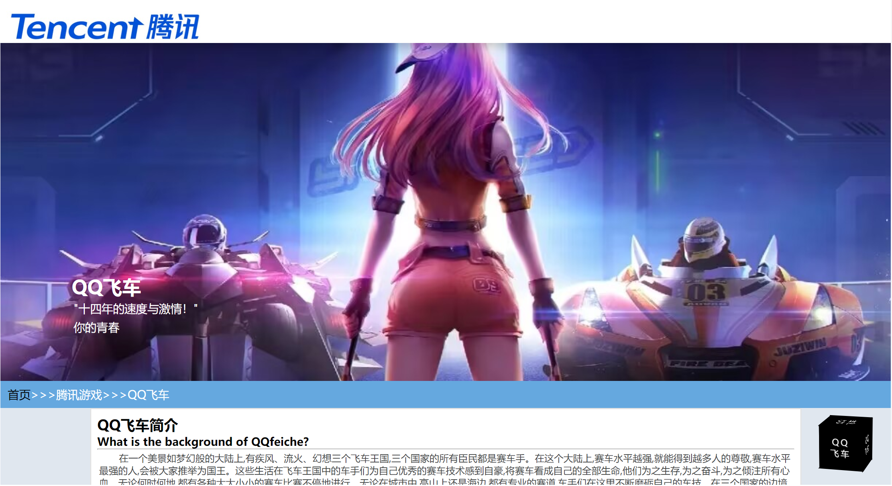
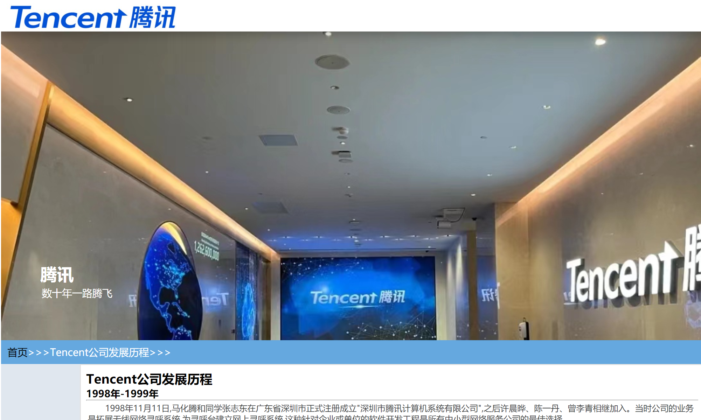
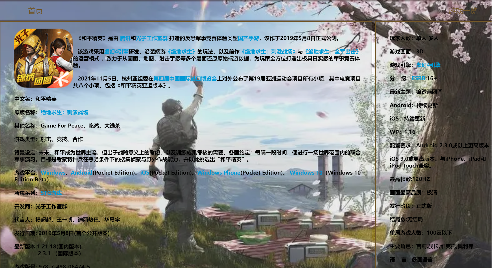
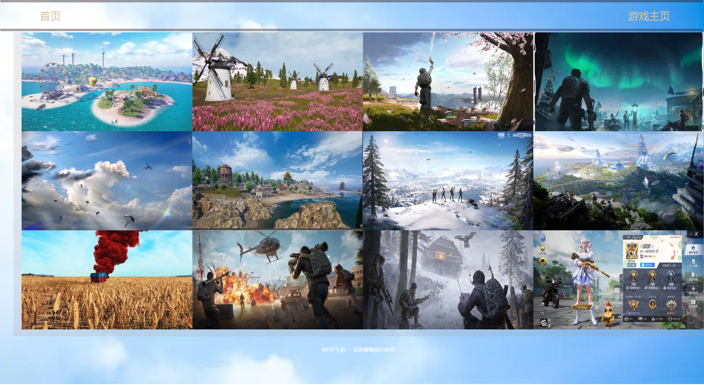
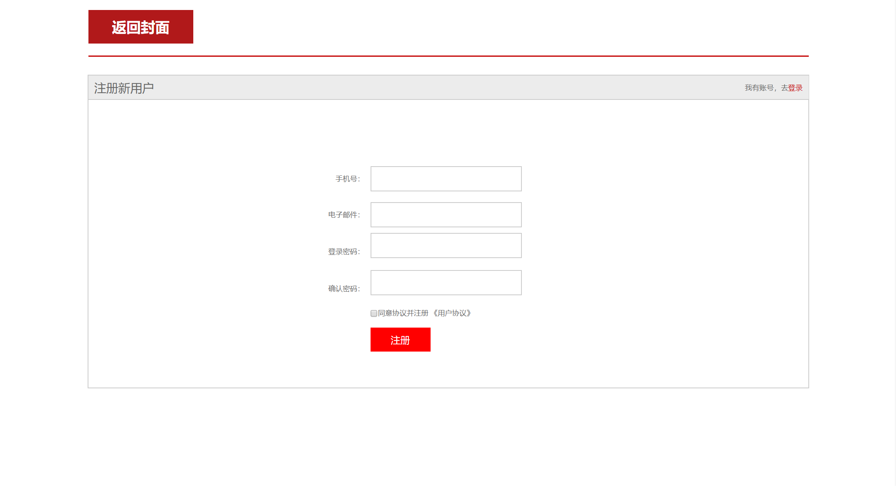
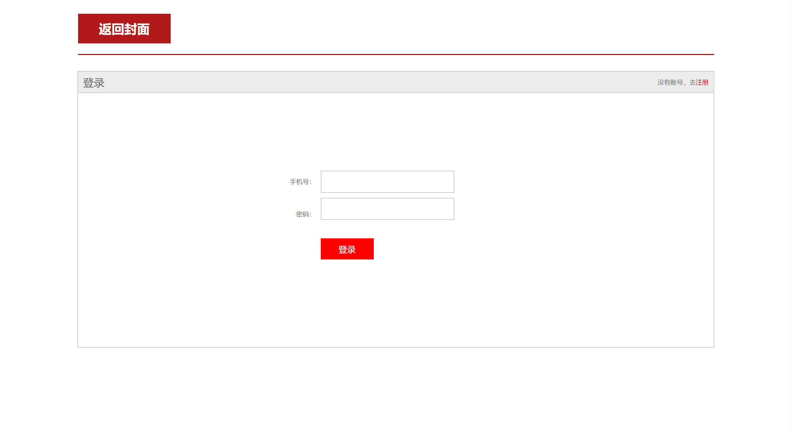
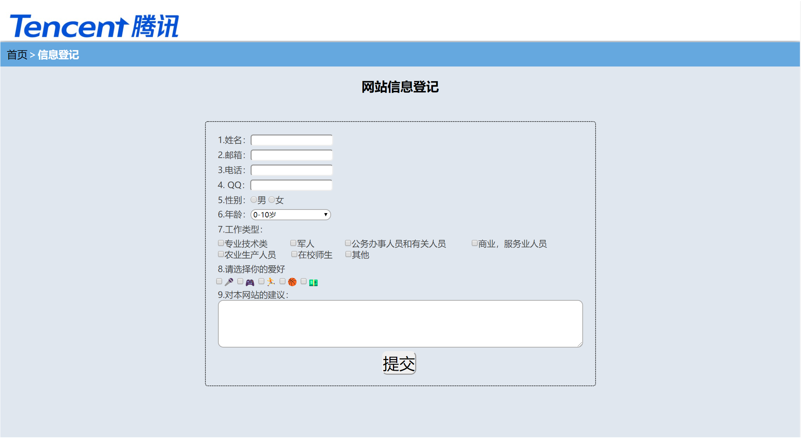

网页细节：
1.为了更加逼近成品网页，我们特地增加了网页图标，此处代码较为简单 link rel="shortcut icon" href="../webimages/图标(2).jpg" type="image/x-icon" 实现了区别于其他网站，成为本网站独特的标志。
2.封面处实现了js动画效果，能够显示出实时的准确时间，同时时间的数字实现了倒影效果 ，丰富了效果。同时时钟外圈有三个光环，三个光环分别代表时针，分针和秒针，反映了真实时 钟的效果，贴近现实，这是最难实现的特效部分，经过在csdn上的学习以及不断修改，最终实现 了仿时钟效果，同时封面的搜索栏也是细节部分，能切换搜索引擎：baibu,goole,steam.建议试试
3.登录与注册界面同样使用了js函数，通过js判断用户的邮箱和密码是否合法，注意不合法的邮箱和密码无法完成注册，注册界面设置了两次输入密码的确认功能，也是通过js实现，偶然发现js和C语言很大相似之处。
4.主页最开心的部分是通过学习和改进终于实现了轮播图部分，并把他和主页完美结合。主页的新闻图片都具有动画效果，鼠标悬停时放大图片，点击可以进入外部链接浏览详细内容，当然，我们的子页都在导航栏上面。主页下半部分通过视觉差实现了滚动条效果，点击图片同样可以进入外部网站（这些外部网站是为了丰富浏览体验，完善功能）。
5.主页和个别子页我们放置了一个黑盒子以丰富视觉效果
6.发展历程子页和QQ飞车子页的大图部分同样利用视觉差实现了图片滚动效果，页脚放置了返回主页的快捷方式，QQ飞车子页实现了视频的放置，丰富了浏览体验。
7.业务架构子页表格上方实现了字幕的滚动播放，侧边栏部分我们突破常规，鼠标悬浮于文字上时导航条会伸长，同时丰富了配色，背景是蓝条白云，彩色的配色就是彩虹，在表格右下角，放置了一个返回顶部按钮，同时鼠标悬停于图片上会有动态效果。
8.和平精英的介绍子页实现了鼠标样式的改变，更加符合游戏的动漫化主题，在图片展示区，鼠标悬浮时图片会有放大效果。
9.信息登记页面点击提交会有弹窗提示。









